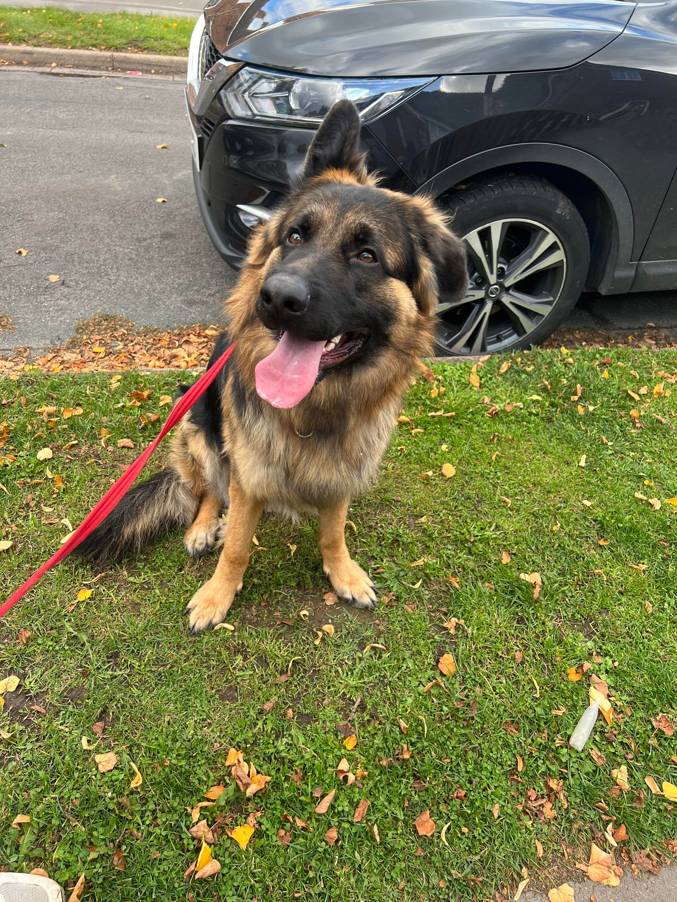
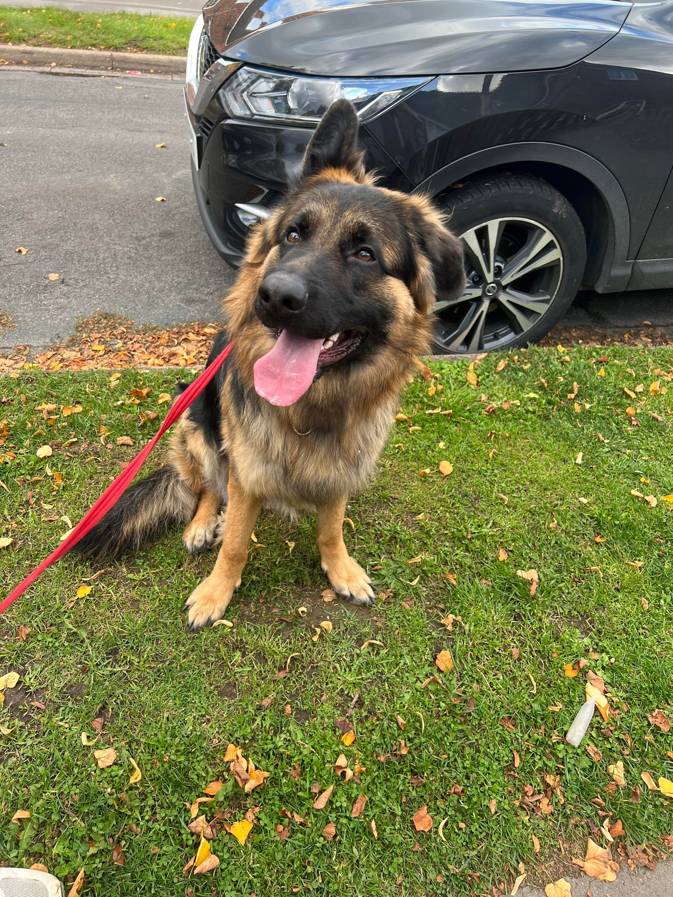

Welcome to my dog care world! I'm Caitlin Colley, the heart and soul behind Just4Paws , where I specialise in providing top-notch dog sitting, dog walking, and dog pop-ins services. My journey into the world of canine care began with a profound love for dogs. As a lifelong dog enthusiast, I've always felt a deep connection with these incredible animals. This passion inspired me to turn my love for dogs into a fulfilling career dedicated to their well-being. With years of experience, I understand that every dog is unique, each with its own set of needs and preferences. Whether your furry friend craves a long, energising walk, a cosy overnight stay, or simply some quick pop-ins during the day, I tailor my services to cater to their individual requirements. From full-day playdates filled with fun and socialisation to peaceful, secure overnight stays, your dog will receive the utmost care, attention, and love. My goal is to create a safe, comfortable, and stimulating environment that ensures your pet feels like a cherished member of my extended family.
When it comes to dog walking, I understand the importance of exercise and mental stimulation for your furry friend's overall well-being. I embark on invigorating walks that cater to your dog's energy level, promoting physical fitness and a joyful, wagging tail. For those busy days when you can't be there for your dog, my dog pop-ins service comes to the rescue. Whether it's a midday bathroom break, a play session, or just some comforting companionship, I'm here to ensure your dog's routine remains uninterrupted, promoting their happiness and comfort. My commitment to your pet's happiness and safety goes beyond the basics, ensuring your dog is in capable hands in any situation. Additionally, I maintain open communication with pet owners, providing regular updates and peace of mind while you're away.
I consider it a privilege to care for your furry family members, and I treat each dog as if they were my own. With a genuine love for animals, a commitment to their well-being, and a dedication to exceeding your expectations, I look forward to welcoming your beloved pet into the Just4Paws family. Thank you for entrusting me with your precious furry companions.
 
